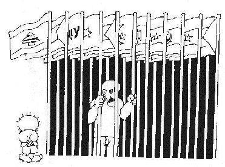

SELF-DETERMINATION AS A CRUCIAL PRINCIPLE OF HUMAN RIGHTS IN PALESTINE A CALL ON LOCAL, REGIONAL AND INTERNATIONAL NGOs
On March 25, 1999 the European Union issued the Berlin Declaration in which it reaffirmed its continuing and unqualified Palestinian right to self-determination including the option of a state and looks forward to the early fulfillment of this right. It stressed that this right is not subject to any veto. The European Union additionally declared "its readiness to consider the recognition of a Palestinian State in due course." At this point in time there should be a refocus on the internationalisation of the Question of Palestine.
The Oslo Accords have served to isolate the Question from the international community, and has provided an opportunity for foreign governments to be more openn in their support of Israel (recently trade relations are established between Israel and a number of Asian states). Moreover, there has also been a regional isolation, with neighbouring Arab states rushing to sign agreements with Israel in order to secure their own economic and development interests. This international and regional isolation is forcing the Question of Palestine into a local isolated issue, of concern to Israel and the Palestinian Authority and their "honest broker" the US, but of less concern to the outside world. This isolation makes protecting human rights more and more difficult.
There is a reluctance on the part of most governments to pressure both parties, Israel and the Palestinian Authority, to comply with human rights covenants and international law has been bypassed by reference to the signed agreements, instead to various international covenants, UN resolutions, or even the Universal Declaration of Human Rights. Additionally, there is another isolation, that of international human rights organisations. For example, there is the deference of the International Committee of the Red Cross (ICRC), which has been reluctant to take a view on the Oslo process in relation to the Fourth Geneva Convention.
Additionally, groups such as Amnesty International which is primarily concerned with freedom from torture, liberty of the person and trial by due process, monitors the activities of the Palestinian Authority and criticises legitimately the human rights record of the Palestinian Authority, but it fails to link such violations to the overall Israeli occupation. If the powers of the Palestinian Authority are viewed as having been delegated by Israel, the question of the responsibilities of the Palestinian Authority are subsumed under that of the responsibilities of Israel. To the extent that the Palestinian Authority in fact remains subservient to the will of the Occupying Power, and as long as the occupation continues, Israel should continue to be held accountable by the humanitarian law obligations of the Fourth Geneva Convention.
However, human rights organisations continue to observe continues human rights violations both committed by Israel as by the Palestinian Authority. For example, recently Israel detained 16 Palestinian children. During interrogation, two of the children were beaten and the others were threatened with physical abuse, and confessions were extracted from the arrested children. These arrest constitute clear violations of the UDHR, the ICCPR, the Fourth Geneva Convention, the UN Convention on the Rights of the Child and even violations of the Oslo Agreements which state that "Israel and the Palestinians shall exercise their powers and responsibilities...with due regard to internationally accepted norms and principles of human rights and the rule of law" (Art 14 Gaza-Jericho Accord; Art 19 Interim Agreement "Oslo II").
The UN Human Rights Committee noted that self-determination was a crucial principle of collective human rights (the Committee's interpretation of art 1 of the ICCPR). In its general comment on Self-Determination adopted in 1984, the Human Rights Committee emphasised that the realisation of the right of self-determination "was an essential condition for the effective guarantee and observance of individual human rights".
The right to self-determination can not be given away, being a non-negotiable human right recognised in order to enhance economic, social, cultural, political and civil rights. Autonomy is a concept repugnant to the exercise of the right of self-determination of peoples.
The principle of self-determination of peoples was expressly included in the UN Charter, by article 1(2). The Palestinians had not acquired their independent nationhood at the conclusion of the British Mandate and the transfer of the Question of Palestine to the UN in 1948. Their right to self-determination had not been abrogated or dissolved at that time. On the contrary, it became active, in possession, and awaits implementation. The Oslo Accords can never derogate from the right to self-determination which asserts the right of the Palestinian people to freely decide on their own political, economic, social and cultural status. UNGA 2767 adopted on 8 December 1970 "recognises that the people of Palestine are entitled to equal rights and self-determination in accordance with the Charter of the UN." This was reaffirmed more strongly in UNGA 2787 of 6 December 1971.
Furthering this, it is highly doubtful whether any claim by Israel to fill the "vacuum" in territorial sovereignty over the "territories" could be supported by international law. The series of UN resolutions is inconsistent with recognition of any such claim. The juxtaposition of the right of self-determination of the Palestinians residing in the occupied Palestine and Israel's occupation would seem to be a legal question that might well be referred to the International Court of Justice by the UNGA for any advisory opinion under article 96(1) of the UN Charter. This demands a two-thirds majority vote. At the same time, the UNGA might move to recommend a referendum in Palestine, before the determination of the right of self-determination is considered by the court, together with other claims to the territories.
It is in regard to such matters that the return of Palestinian refugees and the existence of large numbers of Jewish colonies in occupied Palestine becomes critical. The existence of large numbers of Palestinian refugees impedes the exercise of the Palestinian people's right to self-determination. The right of self-determination is seriously impaired if the majority of the people concerned are unable to return to their homes from which they were forced to fled. Any proposed referendum should include the Palestinian refugees in neighbouring Arab states. The Court's advisory opinion might well be that the Jewish colonies are not lawfully established. It might be contended before the International Court of Justice that the existence of such Jewish colonies assumes an assertion of Israeli sovereignty which is the very question in dispute. The juridical status of the territories occupied by Israel, and its rights therein, might well be a legal question for the Court's advisory opinion.
Moreover, the Palestinians are considered to have the right to self-determination, that is treated as having an accepted place in contemporary international law, in the two UN Covenants on Human Rights of 1966, by the UNGA and, more cautiously, by the International Court of Justice (the South-West Africa Case 1971; Western Sahara Case 1975). The language and the reasoning of the International Court of Justice in its advisory opinions show that it considers that there is a legal right to self-determination. It would not be easy to convince any international tribunal seeking to apply international law that the Palestinians in Palestine and the Palestinian refugees outside Palestine are precluded from the right to self-determination.
The unique nature of the West Bank and Gaza situation is Israel's occupation and the question of how it is to be juxtaposted with the Palestinian right of self-determination. That is where the right of self-defence is considered. Such a right is not identical with state's security. Security is a political and military interest which Israel has in common with all other states. It is the reason advanced for Israel's refusal to withdraw from occupied Palestine. Self-defence and security are not identical, either in nature or content. It is not a claim that Israel is exercising its inherent legal right of self-defence by its continued occupation of Palestine. Such a claim would not correspond with the facts of the present situation.
The continued occupation by Israel is not proportionate to the threat to it. The response of Israel is excessive and the threat not immediate. The present Israeli response of force, i.e. by remaining in occupied Palestine, would require to be justified, in fact and in law. Israel's reliance upon its "security" is an attempt to equate a political aspiration with a legal right. A belligerent occupation which rests solely on the "security" of Israel cannot be considered to oust the legal right of self-determination of the Palestinian people. Security may be a political interest and bargaining counter, but it is not a legal basis for Israel's continued occupation of Palestine.
Given this situation the following options are available in which NGOs and human rights groups and networks could play an important role. According to international covenants, states may invite a state to accede to the International Covenant on Economic, Social and Cultural Rights and on Civil and Political Rights. Over 120 states have already recognised the State of Palestine (since 1988); and NGOs might seek to convince member states in the General Assembly that they invite Palestine to accede to the international covenants on human rights. There is no possibility of a veto because the Security Council has nothing to do with it.
If 120 states invite Palestine to accede to the international covenants on human rights, you have a number of very important results. First and foremost, Palestine recognises unambiguously the importance of human rights; secondly, you have an indication that over 120 states take their recognition of Palestine as a state seriously. It might even open the door to Palestine to become a full member of the UN. This is important since the international community can then demonstrate that it is not simply up to the discretion of Israel to decide the final result of the settlement, nor is it for Israel to act as if Palestine can only continue as a autonomous entity within the de facto sovereignty of Israel. That ambiguity would be removed. Should there be any ambiguity within the UN with regard to this solution, the UN General Assembly can easily ask for an advisory opinion from the International Court of Justice and this court can then give its legal opinion on the present legal status of Palestine.
The responsibility of the UN General Assembly which has stressed repeatedly the right to self-determination of the Palestinian people (see also the Berlin Declaration cited above), and the significance of UN resolution 242 and 338 (note that art 1 of the Declaration of Principles stated that negotiations on the permanent status will lead to the implementation of UNSCR 242 and 338). If there were a request by 120 states according to whom Palestine is already a state (since otherwise they would not have recognised it), then there would be no reason why these 120 states with a majority in the UN General Assembly, not facing the problem of a US veto, could not ask the Secretary-General Assembly to take steps asking for an advisory opinion.
This is a call for local, regional and international NGOs that have consultative status in meetings of UN bodies to convince member states in the General Assembly that they invite Palestine to accede to the international covenants on human rights. These bodies are various committees entrusted with the monitoring of human rights treaties (the Human Rights Committee; the Committee on Economic, Social and Cultural Rights; the Committee on the Elimination of Racial Discrimination; the the Committee against Torture; and the Committee on the Rights of the Child) in addition to the Working Groups of the UN Commission.
Those NGOs in consultative status with ECOSOC may submit written and oral statements related to agenda items. NGOs can also lobby on proposed resolutions. Often parallel meetings with NGOs and diplomats are convened to discuss action by the Commission on specific countries. Meetings with Special Rapporteurs on countries can be organised by all NGOs and written information can be submitted to the Rapporteurs and Working Groups. Although active participation in the sessions of the Commission is restricted to NGOs with consultative status, the special procedures of the Commission (special rapporteurs e.g.) can be used by organisations and groups concerned. This is a call for all organisations that like to see human rights being respected in Palestine to use their abilities and opportunities and to seek the full compliance to human rights standards by inviting Palestine to accede to the international covenants on human rights.
Hanthala Palestine
10 January 2000For more information on the consultative status of NGOs CLICK HERE